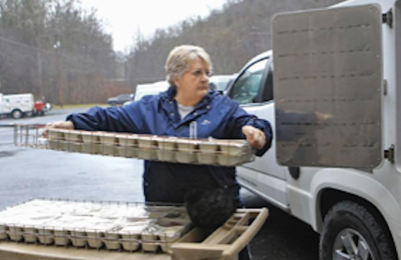
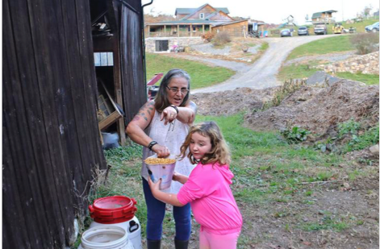
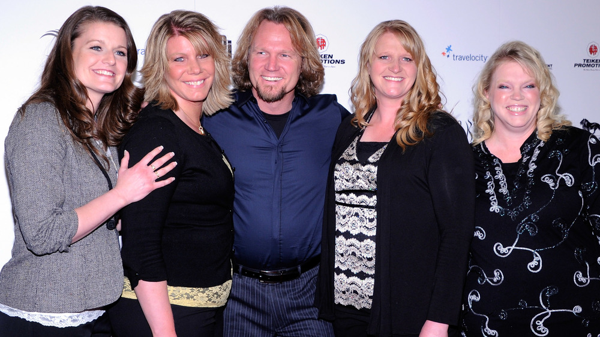

Dec 12, 2021
Coetta Atwell of Oceana is 68 years old and, after suffering multiple aneurysms, cannot stand for long. She certainly can’t get out and about. Violet Meadows of Wyoming County is 90. She lives alone and has vertigo. Plus, she says with a laugh, “The last time I tried to boil water, I burned the pot.” Georgia Hatfield of Coal Mountain is 96 now. She keeps all her basic necessities – bottled water, hand cream, tissues, medicines and telephone – within arm’s reach of her living room couch where she spends most days beneath a layer of blankets. She has been receiving Meals on Wheels for about 10 years. Hazel Conn knows them all. Knows their ailments, knows their personalities, knows their needs. Conn has been a delivery driver for the Wyoming County Meals on Wheels program for almost 12 years – and to say she’s seen a little bit of everything would be an understatement. She’s plunged toilets, rescued pets, delivered meals from her own personal kitchen. She gives hugs and personal attention to Wyoming County’s elderly who live on limited resources. Once, Conn found an elderly person who had passed away. No one else was there. No one else had come calling. The Wyoming County Meals on Wheels Program delivered more than 28,000 meals in 2019. Conn delivered more than half of those. The fully equipped kitchen at the Wyoming County Council on Aging on Mullins starts buzzing around 6:30 a.m. weekdays. Two cooks arrive early to prepare mealtime favorites like fried chicken and dumplings. On holidays, diners might get an extra perk like a bag of apples or turkey with all the fixings. No matter the weather, drivers like Conn arrive around 9 a.m. to load the food trucks and then are off on their routes. Conn travels about 100 miles a day, five days a week. Inclement weather is just part of the deal. "I’ve been out in eight inches of snow,” said Conn. “There have been times I’ve been caught out and I still do my run and I try to get to everybody.” The seniors on Conn’s Wyoming County route perk up when the Meals on Wheels truck arrives. “I know every one of them by name,” Conn said. “Most of them will say bye and I love you. Most of them will hug you. We’re like family.” Conn says many of her clients are dependent on the Meals on Wheels program.
“For a lot of my people, I’m the only person they see for two or three days at a time until I come back,” she said. “I hate to leave them. A lot of them want to tell me about their sickness and I want to be able to listen to them because they don’t have anybody else.” Conn shared the story of one couple in Oceana that would do without if the program went away. “The wife has kidney failure and goes three days a week for dialysis and the husband can’t do anything either,” Conn said. She asked the elderly woman if she’s able to cook any meals herself. “She said ‘No, we can’t cook anything. These meals are our lifeline.’ I see quite a bit like that,” she said. To qualify for the program, a person must be 60 years old or older, be homebound, unable to leave his or her house under normal circumstances because of illness, an incapacitating disability, isolation or lack of transportation. Or all of the above. Conn sees a lot of poverty. Most of her seniors live on very small, fixed income budgets, she says. “A lot don’t have a lot. They don’t have very much at all,” she said. “And they’re really good people.” Conn routinely goes beyond what her job description requires. For instance, one elderly lady on her route loves fettuccini and coleslaw – but it’s not on the delivery menu often. So, Conn purchased all the ingredients out of her own pocket, got to work in her own kitchen and whipped up that exact meal for the elderly woman. “I’m not bragging on me, I’m saying God gave me a good heart and I love people,” Conn said. “I love being around them and I miss them when they’re not home or in the hospital.” Funding dictates just how much The Meals on Wheels program in Wyoming County can do – and just how many seniors can be served. “If they could give us more funding, we could give more in the meals – they could give them a better quality of meals,” Conn said. “We could also reach out to a lot more people. We don’t have the funding for it.” There are more than 1,000 seniors statewide, and 35 in Wyoming County alone who sit on the waitlist for the Meals on Wheels. The program is basically first-come, first-served. “It’s not fair to our elderly people and our veterans to sign up for this and have to be on a waiting list and wait months,” Conn said. Jennifer Gibson, Executive Director for the Council on Aging says, “We try not to advertise our meals. When people call it’s depressing when we have to tell them it’s going to be 6 months to a year before we can provide you a meal.” Last year, the Meals on Wheels Program distributed more than 1.3 million meals across West Virginia. Gibson, who also serves as the legislative chair for the West Virginia Directors of Seniors and Community Services, says the state needs to allocate more money for senior programs. She is currently asking the legislature to invest an additional $5 million in the senior services budget so the nutrition program can be expanded and to secure current services. She says more money would also eliminate the home delivery meals waiting list. In addition to home delivery meals, the Council on Agency also offers education and sit-down meals in a senior center giving the elderly the chance to socialize. Government reimburses the program at a rate of $6.36 for dining room meals and $6.80 for home delivery meals, according to Gibson. The cost of a home delivery meal is $8.84, says Gibson – or $2.48 cents less than the actual cost. “We’re losing money providing this service. Even though we’re a nonprofit, nobody can stay in business if you’re losing money providing a service,” said Gibson. “We’re trying to come up with the difference between that doing fundraising and condensing deliveries to save on transportation costs.”
Seniors who are well enough to leave their homes come to a senior center for meals, which is less costly and has additional social benefits. “A lot of them don’t have people to depend on, and if they do, they don’t want to be burdens on them either,” Gibson said. “I’ve been in people’s homes before and you open the fridge and they have very few things.” Many seniors don’t cook and tend to just “snack” throughout the day, which isn’t healthy, Gibson says. “The only meal many get is our hot meal one time a day,” she said. “Our services are an investment not an expense to the state. They save money, especially on healthcare costs,” she said. “If they (seniors) can get good nutrition and use our transportation services to go to their doctor visits, this helps them maintain their quality life and get to doctor appointments. “We’ve had to make tough choices over the years,” she said. “We’ve ended up with waiting lists for seniors. We’re not willing to give up the fight. We’re just going to keep doing what we have to do to keep providing.”
More Portfolio Items

Grandparents raising grandchildren
Dec 12, 2021

Why These Real Housewives Quit
July 9, 2022

When the water runs dry
Feb 1, 2020


The Man who Broke the Sound Barrier: The Fastest Man Alive
December 8, 2020
UMWA President Talks Biden’s Energy Plans
Mar 6, 2021